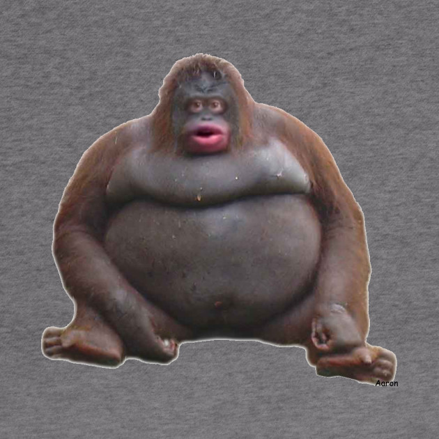
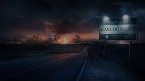

From today's featured article

Reed beds in Ham Wall
Reed beds in Ham Wall
Ham Wall is an English wetland and National Nature Reserve located 4 kilometres (2.5 mi) west of Glastonbury on the Somerset Levels. It is managed by the Royal Society for the Protection of Birds, which helps coordinate conservation issues across the Somerset Levels as part of the Avalon Marshes Partnership. The reserve was constructed originally to provide reed bed habitat for the bittern, which in 1997 was at a low population level in the UK. The site is divided into sections with independently controllable water levels, and machinery and cattle are used to maintain the quality of the reed beds. The reserve hosts important breeding populations of the rare little bittern and great white egret, and has other uncommon animals and plants. Potential future threats may include heavy summer rains and extensive flooding. Sea level rise may make drainage more difficult, and current water pumping facilities may become inadequate. (Full article...)
Recently featured: PaleoceneMillard FillmoreGottlob Berger
ArchiveBy emailMore featured articles
Did you know ...
Queen Elizabeth II with a Launer handbag
Queen Elizabeth II
with a Launer handbag
... that Queen Elizabeth II owns more than 200 handbags by Launer London (example pictured)?
... that cognitive inertia is said to play a role in why group brainstorming sessions often fail to generate many ideas?
... that the Renfrewshire Council cloned the Wallace Yew, as the historic tree was dying from a fungal infection?
... that after three-time Chinese Basketball Association champion Ji Zhe died aged 33, the Beijing Ducks distributed 18,000 T-shirts bearing his jersey number of 51?
... that early tenants at New York City's Lincoln Building ranged from architects such as Alfred Zucker to film companies such as the Universal Film Manufacturing Company?
... that several months after Thomas I. Gasson became the president of Boston College, he began arranging to relocate the school to Chestnut Hill?
... that "Wir pflügen und wir streuen" ('We plow and sow'), with words by Matthias Claudius, began as a song of a fictional harvest festival, and is now a Protestant hymn for Erntedankfest?
... that at the age of 84, Charles Duke is the youngest man to have walked on the Moon?
ArchiveStart a new articleNominate an article
In the news

Ukraine International Airlines Flight 752 aircraft in 2019
UIA Flight 752 aircraft
Ukraine International Airlines Flight 752 (aircraft pictured) crashes shortly after takeoff from Tehran, Iran, killing all 176 people on board.
After a U.S. airstrike kills Iranian general Qasem Soleimani, at least 56 people die in a stampede during his burial procession in Kerman, and Iranian forces attack two military bases in Iraq.
Seventeen inmates are killed in two prison riots at a rehabilitation center in Cieneguillas, Mexico.
Ongoing: Australian bushfiresIndian Citizenship Amendment Act protests
Recent deaths: Elizabeth WurtzelJune Bacon-BerceyLarry GoganMinati MishraHans TilkowskiTom Long
Nominate an article
On this day
January 9
RMS Queen Elizabeth in 1966
RMS Queen Elizabeth in 1966
1857 – An earthquake registering 7.9 Mw ruptured part of the San Andreas Fault in central and southern California.
1909 – Ernest Shackleton, leading the Nimrod Expedition, planted the British flag 97.5 nautical miles (180.6 km; 112.2 mi) from the South Pole, the farthest south explorers had reached at the time.
1972 – Seawise University, formerly RMS Queen Elizabeth (pictured), an ocean liner that sailed the Atlantic for Cunard Line, caught fire in Victoria Harbour, Hong Kong.
1991 – Representatives from the United States and Iraq met at the Geneva Peace Conference to find a peaceful resolution to the Iraqi invasion of Kuwait.
2015 – Contaminated beer served at a funeral in Tete Province, Mozambique, killed 75 people and made at least 230 others ill.
Antoine Samuel Adam-Salomon (b. 1818) · Samuel Gridley Howe (d. 1876) · Brigitte Askonas (d. 2013)
More anniversaries: January 8January 9January 10
ArchiveBy emailList of historical anniversaries